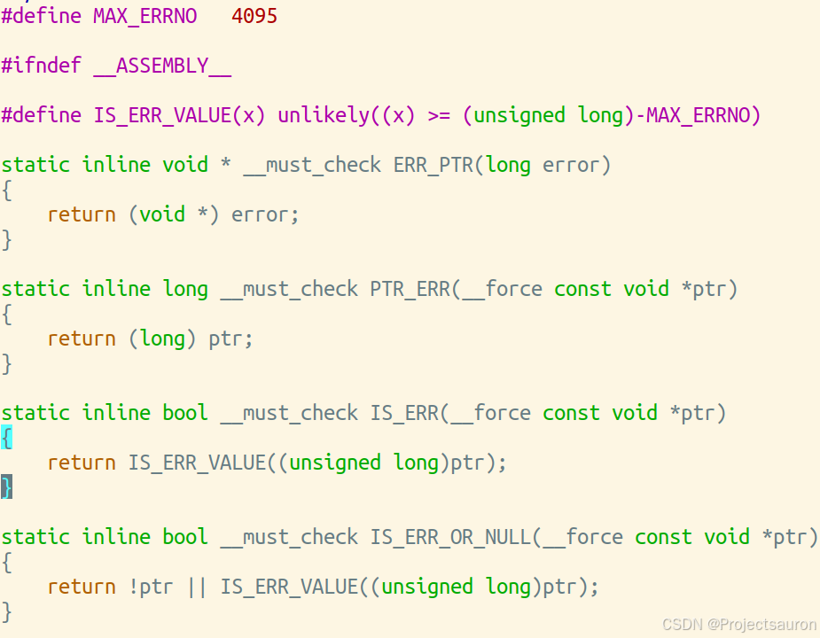

Linux 错误码
@toc
一、概述
在 Linux 系统中，错误码是用来表示操作系统运行过程中发生的错误的数字代码。错误码通常由负数表示，0 表示成功，正数表示警告或其他非致命错误。
为了开发者更好地处理系统错误，内核中预定义的错误几乎涵盖了我们可能遇到的所有问题。一些错误的宏定义在 include/uapi/asm-generic/errno-base.h，还有一部分定义在 include/uapi/asm-generic/errno-base.h 中。
当函数执行发生错误的时候，操作系统会将这个错误所对应的编号赋值给 errno 变量，每一个进程都维护了自己的 errno 变量，它是程序中的全局变量，该变量用于存储==就近==发生的函数执行错误编号。
只有当系统调用或者调用 lib 函数时出错，才会置位
errno！
二、含义
| 宏名称 | Value | Description | 含义 |
|---|---|---|---|
| EPERM | 1 | Operation not permitted | 操作不允许 |
| ENOENT | 2 | No such file or directory | 没有这样的文件或目录 |
| ESRCH | 3 | No such process | 没有这样的过程 |
| EINTR | 4 | Interrupted system call | 系统调用被中断 |
| EIO | 5 | I/O error | I/O 错误 |
| ENXIO | 6 | No such device or address | 没有这样的设备或地址 |
| E2BIG | 7 | Arg list too long | 参数列表太长 |
| ENOEXEC | 8 | Exec format error | 执行格式错误 |
| EBADF | 9 | Bad file number | 坏的文件描述符 |
| ECHILD | 10 | No child processes | 没有子进程 |
| EAGAIN | 11 | Try again | 资源暂时不可用 |
| ENOMEM | 12 | Out of memory | 内存溢出 |
| EACCES | 13 | Permission denied | 拒绝许可 |
| EFAULT | 14 | Bad address | 错误的地址 |
| ENOTBLK | 15 | Block device required | 块设备请求 |
| EBUSY | 16 | Device or resource busy | 设备或资源忙 |
| EEXIST | 17 | File exists | 文件存在 |
| EXDEV | 18 | Cross-device link | 无效的交叉链接 |
| ENODEV | 19 | No such device | 设备不存在 |
| ENOTDIR | 20 | Not a directory | 不是一个目录 |
| EISDIR | 21 | Is a directory | 是一个目录 |
| EINVAL | 22 | Invalid argument | 无效的参数 |
| ENFILE | 23 | File table overflow | 打开太多的文件系统 |
| EMFILE | 24 | Too many open files | 打开的文件过多 |
| ENOTTY | 25 | Not a tty device | 不是 tty 设备 |
| ETXTBSY | 26 | Text file busy | 文本文件忙 |
| EFBIG | 27 | File too large | 文件太大 |
| ENOSPC | 28 | No space left on device | 设备上没有空间 |
| ESPIPE | 29 | Illegal seek | 非法移位 |
| EROFS | 30 | Read-only file system | 只读文件系统 |
| EMLINK | 31 | Too many links | 太多的链接 |
| EPIPE | 32 | Broken pipe | 管道破裂 |
| EDOM | 33 | Math argument out of domain | 数值结果超出范围 |
| ERANGE | 34 | Math result not representable | 数值结果不具代表性 |
| EDEADLK | 35 | Resource deadlock would occur | 资源死锁错误 |
| ENAMETOOLONG | 36 | Filename too long | 文件名太长 |
| ENOLCK | 37 | No record locks available | 没有可用锁 |
| ENOSYS | 38 | Function not implemented | 功能没有实现 |
| ENOTEMPTY | 39 | Directory not empty | 目录不空 |
| ELOOP | 40 | Too many symbolic links encountered | 符号链接层次太多 |
| EWOULDBLOCK | 41 | Same as EAGAIN | 和 EAGAIN 一样 |
| ENOMSG | 42 | No message of desired type | 没有期望类型的消息 |
| EIDRM | 43 | Identifier removed | 标识符删除 |
| ECHRNG | 44 | Channel number out of range | 频道数目超出范围 |
| EL2NSYNC | 45 | Level 2 not synchronized | 2 级不同步 |
| EL3HLT | 46 | Level 3 halted | 3 级中断 |
| EL3RST | 47 | Level 3 reset | 3 级复位 |
| ELNRNG | 48 | Link number out of range | 链接数超出范围 |
| EUNATCH | 49 | Protocol driver not attached | 协议驱动程序没有连接 |
| ENOCSI | 50 | No CSI structure available | 没有可用 CSI 结构 |
| EL2HLT | 51 | Level 2 halted | 2 级中断 |
| EBADE | 52 | Invalid exchange | 无效的交换 |
| EBADR | 53 | Invalid request descriptor | 请求描述符无效 |
| EXFULL | 54 | Exchange full | 交换充分 |
| ENOANO | 55 | No anode | 没有阳极 |
| EBADRQC | 56 | Invalid request code | 无效的请求代码 |
| EBADSLT | 57 | Invalid slot | 无效的槽 |
| EDEADLOCK | 58 | Same as EDEADLK | 和 EDEADLK 一样 |
| EBFONT | 59 | Bad font file format | 错误的字体文件格式 |
| ENOSTR | 60 | Device not a stream | 设备不是字符流 |
| ENODATA | 61 | No data available | 无可用数据 |
| ETIME | 62 | Timer expired | 计时器过期 |
| ENOSR | 63 | Out of streams resources | 流资源溢出 |
| ENONET | 64 | Machine is not on the network | 机器不上网 |
| ENOPKG | 65 | Package not installed | 没有安装软件包 |
| EREMOTE | 66 | Object is remote | 对象是远程的 |
| ENOLINK | 67 | Link has been severed | 联系被切断 |
| EADV | 68 | Advertise error | 广告的错误 |
| ESRMNT | 69 | Srmount error | srmount 错误 |
| ECOMM | 70 | Communication error on send | 发送时的通讯错误 |
| EPROTO | 71 | Protocol error | 协议错误 |
| EMULTIHOP | 72 | Multihop attempted | 多跳尝试 |
| EDOTDOT | 73 | RFS specific error | RFS 特定的错误 |
| EBADMSG | 74 | Not a data message | 非数据消息 |
| EOVERFLOW | 75 | Value too large for defined data type | 值太大,对于定义数据类型 |
| ENOTUNIQ | 76 | Name not unique on network | 名不是唯一的网络 |
| EBADFD | 77 | File descriptor in bad state | 文件描述符在坏状态 |
| EREMCHG | 78 | Remote address changed | 远程地址改变了 |
| ELIBACC | 79 | Cannot access a needed shared library | 无法访问必要的共享库 |
| ELIBBAD | 80 | Accessing a corrupted shared library | 访问损坏的共享库 |
| ELIBSCN | 81 | A .lib section in an .out is corrupted | 库段 .out 损坏 |
| ELIBMAX | 82 | Linking in too many shared libraries | 试图链接太多的共享库 |
| ELIBEXEC | 83 | Cannot exec a shared library directly | 不能直接执行一个共享库 |
| EILSEQ | 84 | Illegal byte sequence | 无效的或不完整的多字节或宽字符 |
| ERESTART | 85 | Interrupted system call should be restarted | 应该重新启动中断的系统调用 |
| ESTRPIPE | 86 | Streams pipe error | 流管错误 |
| EUSERS | 87 | Too many users | 用户太多 |
| ENOTSOCK | 88 | Socket operation on non-socket | 套接字操作在非套接字上 |
| EDESTADDRREQ | 89 | Destination address required | 需要目标地址 |
| EMSGSIZE | 90 | Message too long | 消息太长 |
| EPROTOTYPE | 91 | Protocol wrong type for socket | socket 协议类型错误 |
| ENOPROTOOPT | 92 | Protocol not available | 协议不可用 |
| EPROTONOSUPPORT | 93 | Protocol not supported | 不支持的协议 |
| ESOCKTNOSUPPORT | 94 | Socket type not supported | 套接字类型不受支持 |
| EOPNOTSUPP | 95 | Operation not supported on transport | 不支持的操作 |
| EPFNOSUPPORT | 96 | Protocol family not supported | 不支持的协议族 |
| EAFNOSUPPORT | 97 | Address family not supported by protocol | 协议不支持的地址 |
| EADDRINUSE | 98 | Address already in use | 地址已在使用 |
| EADDRNOTAVAIL | 99 | Cannot assign requested address | 无法分配请求的地址 |
| ENETDOWN | 100 | Network is down | 网络瘫痪 |
| ENETUNREACH | 101 | Network is unreachable | 网络不可达 |
| ENETRESET | 102 | Network dropped | 网络连接丢失 |
| ECONNABORTED | 103 | Software caused connection | 软件导致连接中断 |
| ECONNRESET | 104 | Connection reset by | 连接被重置 |
| ENOBUFS | 105 | No buffer space available | 没有可用的缓冲空间 |
| EISCONN | 106 | Transport endpoint | 传输端点已经连接 |
| ENOTCONN | 107 | Transport endpoint | 传输终点没有连接 |
| ESHUTDOWN | 108 | Cannot send after transport | 传输后无法发送 |
| ETOOMANYREFS | 109 | Too many references | 太多的参考 |
| ETIMEDOUT | 110 | Connection timed | 连接超时 |
| ECONNREFUSED | 111 | Connection refused | 拒绝连接 |
| EHOSTDOWN | 112 | Host is down | 主机已关闭 |
| EHOSTUNREACH | 113 | No route to host | 没有主机的路由 |
| EALREADY | 114 | Operation already | 已运行 |
| EINPROGRESS | 115 | Operation now in | 正在运行 |
| ESTALE | 116 | Stale NFS file handle | 陈旧的 NFS 文件句柄 |
| EUCLEAN | 117 | Structure needs cleaning | 结构需要清洗 |
| ENOTNAM | 118 | Not a XENIX-named | 不是 XENIX 命名的 |
| ENAVAIL | 119 | No XENIX semaphores | 没有 XENIX 信号量 |
| EISNAM | 120 | Is a named type file | 是一个命名的文件类型 |
| EREMOTEIO | 121 | Remote I/O error | 远程输入/输出错误 |
| EDQUOT | 122 | Quota exceeded | 超出磁盘配额 |
| ENOMEDIUM | 123 | No medium found | 没有磁盘被发现 |
| EMEDIUMTYPE | 124 | Wrong medium type | 错误的媒体类型 |
| ECANCELED | 125 | Operation Canceled | 取消操作 |
| ENOKEY | 126 | Required key not available | 所需键不可用 |
| EKEYEXPIRED | 127 | Key has expired | 关键已过期 |
| EKEYREVOKED | 128 | Key has been revoked | 关键被撤销 |
| EKEYREJECTED | 129 | Key was rejected by service | 关键被拒绝服务 |
| EOWNERDEAD | 130 | Owner died | 所有者死亡 |
| ENOTRECOVERABLE | 131 | State not recoveable | 状态不可恢复 |
| ERFKILL | 132 | Operation not possible due to RF-kill | 由于 RF-kill 而无法操作 |
| EHWPOISON | 133 | Memory page has hardware error | 内存页有硬件错误 |
三、错误处理函数
1、IS_ERR
对于一个指针，有三种类型：
- 合法指针：合法指针是指指向有效内存地址的指针
- NULL：NULL 指针是一个特殊的指针值，它不指向任何有效的内存地址
- 错误指针：错误指针是指指向无效、未定义或未分配内存的指针
在 Linux 内核源码中实现了指针错误的处理机制，相关的函数接口有：IS_ERR()、PTR_ERR()、ERR_PTR() 等，其函数的源码在 include/linux/err.h 中，如下所示：

如上所示，IS_ERR() 函数其实就是判断指针是否出错，如果指针指向了内核空间的最后一页，就说明指针是一个无效指针，如果指针并不是落在内核空间的最后一页，就说明这个指针是有效的。无效的指针会表示成一种负数的错误码，如果想知道这个指针是哪个错误码，就用 PTR_ERR() 函数进行转化。
2、strerr、perror
许多不同的函数库都在失败时设置全局变量 errno 的值来指明失败原因。值得注意的是函数报告出错后必须立刻检查 errno 变量，因为==它有可能被下一个函数调用所覆盖==。
有两个非常有用的函数可以用来报告出现的错误：
- strerr
该函数可以将对应的 errno 转换成适合我们查看的字符串信息，其函数原型如下所示：
1 |
|
使用实例：
1 |
|
- perror
调用此函数不需要传入 errno，函数内部会自己去获取 errno 变量的值，调用此函数会直接将错误提示字符串打印出来，而不是返回字符串，除此之外还可以在输出的错误提示字符串之前加入自己的打印信息，函数原型如下所示：
1 |
|
使用实例：
1 |
|